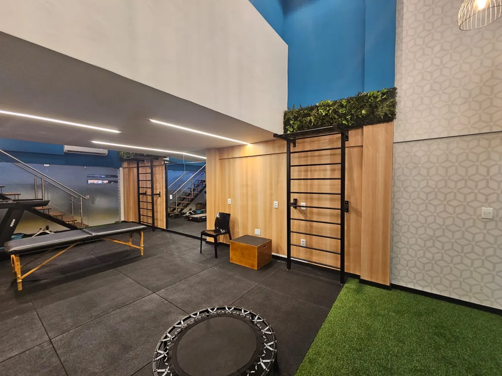

Lesão não é fim de temporada.
Fisioterapia esportiva em Natal para voltar ao treino com força medida
Para quem corre, treina pesado ou compete em Natal: tratamos a lesão, corrigimos desequilíbrios e testamos sua força antes de liberar cada carga.
Lesões que tratamos
- Distensões e lesões musculares
- Entorses, instabilidades e lesões ligamentares
- Lesões no ombro
- Ruptura do ligamento cruzado anterior (LCA)
- Condromalácia patelar e lesões no menisco
- Síndrome da banda iliotibial
- Pubalgia e canelite
- Recovery esportivo
Força medida antes de cada carga
Sumir a dor não significa que o músculo ou o ligamento está pronto para o impacto. Com a Dra. Luísa Braga, usamos dinamometria e testes específicos da sua modalidade para que o seu retorno seja uma decisão baseada em dados.
O plano acompanha você da reabilitação ao retorno ao treino e à competição.

Perguntas frequentes
Quando posso voltar ao esporte depois de uma lesão?
O retorno é decidido por critérios, como força, movimento e testes específicos da sua modalidade, e não só pelo tempo. Assim a volta é mais segura.
Atendem atletas amadores?
Sim. Atendemos de corredores e praticantes de academia a atletas de competição, com o plano adaptado à rotina de cada um.
A fisioterapia esportiva também previne lesões?
Sim. A avaliação de força e movimento ajuda a identificar pontos de risco e orientar o treino.
Quer voltar a treinar com confiança e reduzir o risco de recaída?
Marque sua avaliação esportiva em Lagoa Nova.